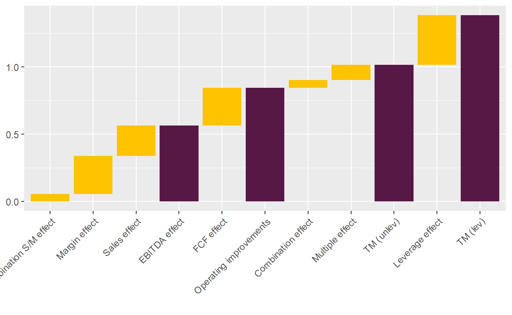
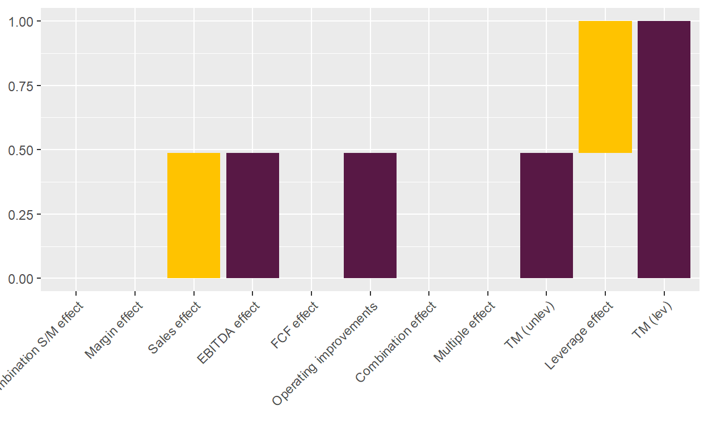
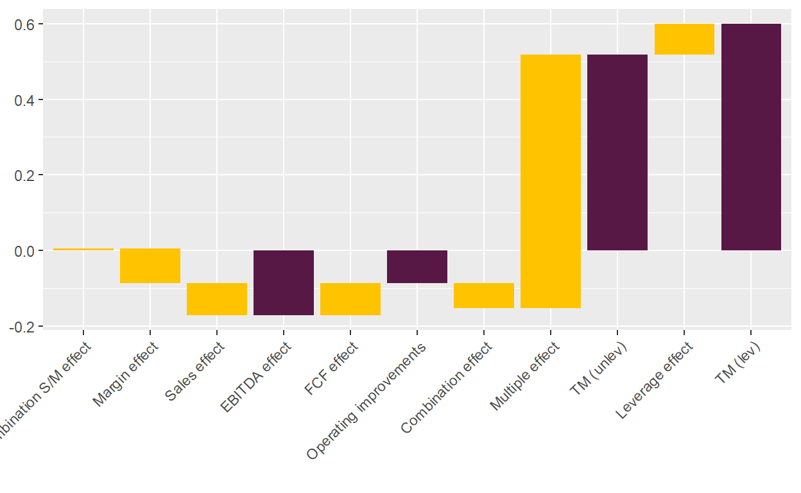

One of the most important valuation tools in private equity.
A key question in private equity is how a fund manager (general partner, or “GP”) generates value. With most key questions in life, there is no simple answer and fund managers around the globe will come up with their own ones. By having a great network, by selecting the right deals, by being able to generate proprietary deal flow, by improving the businesses operationally, by prettying them up for a successful exit, by identifying sector trends, etc. There are so many answers to the question and each GP has their own answer in how they try to return more capital to their investors than they took.
However, for investors it is important to have a framework to measure value creation consistently. Only then can they make meaningful comparisons between different LBOs, funds and GPs. Fortunately, such a framework exists: the LBO value bridge, which splits the overall gain or loss made on an investment into a combination of the following factors:
In this blog post, I show how to calculate these factors for an LBO. I then run through a couple of examples.
The goal is to explain the total net proceeds or gains to equity investors during the holding period, \(TNP\), i.e., the difference between the equity proceeds to equity holders at exit, \(E_T\), and the invested cost of equity at entry, \(E_t\), as well as any interim dividends and equity injections:1
\[ TNP=E_T - E_t + \sum_{n=t+1}^{T-1} E_n. \]
The equity value at entry and exit is the difference between the enterprise value, \(EV\), and the net debt, \(ND\). For example, we can calculate \(E_T\) as:
\[ E_T = EV_T - ND_T.\]
The enterprise value is typically expressed as the product of the EBITDA and the EV/EBITDA multiple. More generally though, we can use any cash flow measure, \(C\), and the accompanying multiple, \(m\):2
\[ E_T = m_T C_T - ND_T.\]
Plugging the \(E_T\) and \(E_t\) equations into the equation to calculate \(TNP\), we get:
\[ \begin{aligned} TNP &=E_T - E_t + \sum_{n=t+1}^{T-1} E_n \\ &=(m_T C_T - ND_T) - (m_t C_t - ND_t) + \sum_{n=t+1}^{T-1} E_n \\ &=(m_T C_T - m_t C_t) - (ND_t - ND_t) + \sum_{n=t+1}^{T-1} E_n \\ \end{aligned} \]
Let’s further define \(\Delta\) as the change of a variable from \(t\) to \(T\). For example, \(\Delta m = m_T - m_t\). Then we can rewrite the above equation:
\[ \begin{aligned} TNP &=((\Delta m + m_t) (\Delta C + C_t) - m_t C_t) - \Delta ND + \sum_{n=t+1}^{T-1} E_n \\ &= m_t \Delta C + \Delta m C_t + \Delta m \Delta C + m_t C_t -m_t C_t - \Delta ND + \sum_{n=t+1}^{T-1} E_n \\ &= m_t \Delta C + \Delta m C_t + \Delta m \Delta C - \Delta ND + \sum_{n=t+1}^{T-1} E_n \\ \end{aligned} \] While the above formula might look scary, it has a pretty straightforward interpretation that is easiest to see with a small example. Let’s assume a 100% equity financed transaction without any dividends or cash injections between the entry and the exit.3 Let’s assume further a fund invested 100 and got 200 back, so the total net proceeds \(TNP\) are 100. Where did this gain of 100 come from? The above formula shows that it must come either from an increase of the EBITDA, an increase of the multiple, or a combination of both. There is no other explanation.
Let’s assume that the company had an EBITDA at entry of 10 (\(C_t=10\)). As \(EV_t=E_t=100\) in this example, it follows that \(m_t=10\). What happens if the EBITDA was still the same at exit, i.e., \(C_T=10\)? In this case, \(m_T\) must be 20, as we know that \(EV_T=E_T=200\). The value creation came in this case exclusively from multiple expansion, the \(\Delta m C_t\) part of the equation.
If we assume instead that the EBITDA increased to 20 until exit, the exit multiple would have been \(m_T=10\) and the value creation would have come exclusively from the EBITDA increase, what is often called operational improvements.
In reality, it is almost always a combination of both an increase in EBITDA and multiple expansion. As a result, there is a part of the value creation that cannot be allocated unambiguously to either the EBITDA increase or the multiple expansion. This is the \(\Delta m \Delta C\) part of the equation.
In the previous section, I have shown how to break up the total net gains for an equity investor into three components (and a combination component):4
So far, all calculations are in absolute values. Practitioners though typically think in terms of money multiples, as it makes a comparison between LBOs much easier. Did a GP do a good job that generated net gains of USD 100 million? Well, we don’t know, as we don’t know how much money was invested in the first place. However, if we scale the net gains by the invested capital and calculate the multiple, it becomes much easier: if they invested USD 10 million, and made 11x, it looks like a great deal; if they invested USD 1 billion, and made 1.1x, it doesn’t look so good anymore.
However, even looking at the multiple can be misleading as we have so far ignored another very important value driver of LBOs, leverage. To understand why leverage is so important, let’s compare the two LBOs in the table below.5
library(knitr)
library(kableExtra)
library(data.table)
DT <- data.table(Item = c("EV", "Equity", "Net debt", "EBITDA", "Interim cash flows"),
LBO_A_entry = c(100, 100, 0, 10, 0),
LBO_A_exit = c(200, 200, 0, 20, 0),
LBO_B_entry = c(100, 10, 90, 10, 0),
LBO_B_exit = c(200, 110,90, 20, 0))
kbl(DT, col.names = c("Item", "Entry", "Exit", "Entry", "Exit")) %>%
kable_classic(full_width = FALSE) %>%
add_header_above(c(" " = 1, "LBO by Fund A" = 2, "LBO by Fund B" = 2))
|
LBO by Fund A
|
LBO by Fund B
|
|||
|---|---|---|---|---|
| Item | Entry | Exit | Entry | Exit |
| EV | 100 | 200 | 100 | 200 |
| Equity | 100 | 200 | 10 | 110 |
| Net debt | 0 | 0 | 90 | 90 |
| EBITDA | 10 | 20 | 10 | 20 |
| Interim cash flows | 0 | 0 | 0 | 0 |
In both LBOs, the exact same value creation happened: the enterprise value increased by 100, or 2x, due to a 2x increase of the EBITDA. There was no multiple expansion. Furthermore, in both LBOs, the equity value increased by 100. The only difference is the financing: the LBO of Fund A was fully equity financed, the LBO of Fund B was financed 10% with equity and 90% with debt.
Now, if an investor in Fund A and one in Fund B would meet and exchange notes, which LBO would steal the show? Most certainly the LBO of Fund B, where investors made a 10x return, while the multiple on the LBO in Fund A was a measly 2x. Such is the power of leverage…However, rather than chiming in on the praise for the GP of Fund B, we want a methodology that simply shows that almost all of the value creation was due to the leverage.
To do so, let’s start with the multiple to equity investors, or the levered multiple, \(TM_L\):
\[ TM_L = \frac{TNP - \sum_{n=t+1}^{T-1} E_n}{\sum_{n=t}^{T-1} E_{n}^{+}}. \] This formula includes now the capital injection and distribution parts to calculate the total proceeds to equity holders, as they are just as relevant: distributions during the holding period increase an investor’s gains, just as capital injections reduce them (let’s denote them with a \(+\) superscript, i.e., \(E^+\)). Next, I divide by all capital injections, including the initial investment at \(E_t\).6 These formulas always look a bit complicated, so let’s have a simple example to clarify: 100% of equity in a company is acquired for 100; during the holding period, additional 50 are injected in the business and 60 are paid out (e.g., through a dividend); at exit, the equity holders get 200. Then the multiple is calculated as:
\[ TM_L = \frac{200-100-50+60}{100+50} = \frac{110}{150} = 0.7x. \] It is important to keep in mind that this is the multiple on the net gains, i.e., ignoring the invested cost, in the numerator. This is different to the multiple used in every pitch book or in my example above, where the invested cost, or 1x, is added (so 1.7x in this example). The reason I use this slightly different definition, following the literature in this field, is that it allows me to calculate an unlevered multiple, \(TM_U\), from the levered multiple, \(TM_L\), applying the famous Miller/Modigliani theorem:
\[ TM_U = \frac{TM_L + r_D \frac{D}{E}}{1+\frac{D}{E}}. \]
\(r_D\) are the costs of the debt over the entire investment time and \(D/E\) is the average debt/equity ratio.7
Applying this formula to the above example shows that the unlevered multiple is exactly the same: \((10 + 0\times 90/10)/(1+90/10)=1\), or \(2\), if you include the invested cost.
Now I have all the different parts to explain the levered multiple. To summarize, the procedure is as follows:
Let’s walk through a few more realistic examples and let’s also plot the value bridge, which gives a much better intuition of the results. I promise that the next part will be more fun than this one.
I implemented functions to calculate and plot the value creation factors in R. Let’s run through an example, taken from Puche’s dissertation.8
#' Calculate the value creation bridge for a PE investment, splitting it up in leverage, multiple and EBITDA effect
#'
#' The function creates the value creation for LBOs; detailed explanation about methodology can be found in Puche (2016) and Pindur (2007).
#' The split-up of the total proceeds (which are net of invested cost, i.e. the net capital gain) in multiple effect, EBITDA effect,
#' combination effect and FCF effect is straightforward and best explained
#' in Pindur (2007). Pindur then scales everything simply by dividing by the total proceeds so that everything adds to 1.
#'
#' In addition, Puche (2016, see footnote 23) focuses on the multiple, which is partly a result of leverage; hence, he
#' unlevers first the multiple and the difference between the levered and unlevered mutiple is the multiple effect.
#'
#'@param .startEquity numeric; equity valuation at start date of the observation period (typically at entry), i.e. EV minus the debt at start point.
#' Careful: if fund does not acquire 100 per cent of equity, you have to scale the fund's investment up.
#'@param .endEquity numeric; equity valuation at end date of observation period.
#'@param .startDebt numeric; debt at start date.
#'@param .endDebt numeric; debt at end date.
#'@param .startRev numeric; revenue at start date.
#'@param .endRev numeric; revenue at end date.
#'@param .startEBITDA numeric; EBITDA at start date.
#'@param .endEBITDA numeric; EBITDA at end date.
#'@param .interimCC numeric; interim additional equity investments. Careful with scaling, should be 100 per cent of equity.
#'@param .interimDist numeric; interim distributions to equity from investments. Careful with scaling, should be 100 per cent of equity.
#'@param .interimIntRate numeric; the interest rate during the holding period for that specific deal.
#'@param .holdingPeriod numeric; holding period (in years) from start to end date of the observation.
#'@return List including the following: 1) A vector with the levered and unlevered multiple (TM_lev and TM_unlev),
#' the overall gain / (loss) on the deal, and
#' the leverage effect, which is the difference between TM_lev and TM_unlev; it then includes the different effects (FCF, EBITDA, etc.)
#' that explain the gain. Important: those effects are shown in absolute numbers. 2) A data.table with the relevant input parameters.
#' 3) A data.table with the relevant results.
#'@export
#'
#'@references
#' Puche (2016): Essays on Value Creation and its Determinants in Private Equity, Dissertation, p. 29ff
#' Pindur (2007): Value Creation in Successful LBOs, Dissertation, p. 69ff
#'
#'@examples
#' ##### Use numerical example from Puche (2016, Table 2-1)
#' list_results <- value_creation_LBO(.startEquity = 50,
#' .endEquity = 135,
#' .startDebt = 50,
#' .endDebt = 30,
#' .startRev = 100,
#' .endRev = 120,
#' .startEBITDA = 10,
#' .endEBITDA = 15,
#' .interimCC = 15,
#' .interimDist = 20,
#' .interimIntRate = 0.09,
#' .holdingPeriod = 4)
value_creation_LBO <- function(.startEquity, .endEquity, .startDebt, .endDebt, .startRev, .endRev, .startEBITDA, .endEBITDA,
.interimCC, .interimDist, .interimIntRate, .holdingPeriod) {
### Calculations of additional inputs
startEV <- .startEquity + .startDebt
endEV <- .endEquity + .endDebt
startEV_EBITDA_mult <- startEV/.startEBITDA
endEV_EBITDA_mult <- endEV/.endEBITDA
costDebt <- (1+.interimIntRate)^.holdingPeriod - 1
invCapital <- .startEquity + .interimCC
deltaEquity <- .endEquity - .startEquity
gain <- deltaEquity + .interimDist - .interimCC
avgDebtEquity <- (.startDebt/.startEquity + .endDebt/.endEquity)/2 #TODO: Understand why you need the average here
startMargin <- .startEBITDA/.startRev
endMargin <- .endEBITDA/.endRev
### Calculations of output
TM_lev <- gain/invCapital
TM_unlev <- (TM_lev + costDebt * avgDebtEquity)/(1 + avgDebtEquity)
lev_effect <- TM_lev - TM_unlev
mult_effect <- .startEBITDA * (endEV_EBITDA_mult - startEV_EBITDA_mult)
mult_EBITDA_comb_effect <- (.endEBITDA - .startEBITDA) * (endEV_EBITDA_mult - startEV_EBITDA_mult)
FCF_effect <- -(.endDebt - .startDebt) + .interimDist - .interimCC
EBITDA_effect <- (.endEBITDA - .startEBITDA) * startEV_EBITDA_mult
Rev_effect <- (.endRev - .startRev) * startMargin * startEV_EBITDA_mult
margin_effect <- (endMargin - startMargin) * .startRev * startEV_EBITDA_mult
SM_comb_effect <- (.endRev - .startRev) * (endMargin - startMargin) * startEV_EBITDA_mult
vec_results <-c(TM_lev = TM_lev,
TM_unlev = TM_unlev,
gain = gain,
lev_effect = lev_effect,
mult_effect = mult_effect,
mult_EBITDA_comb_effect = mult_EBITDA_comb_effect,
EBITDA_effect = EBITDA_effect,
FCF_effect = FCF_effect,
Rev_effect = Rev_effect,
margin_effect = margin_effect,
SM_comb_effect = SM_comb_effect,
startEV_EBITDA_mult = startEV_EBITDA_mult,
endEV_EBITDA_mult = endEV_EBITDA_mult,
startEV = startEV,
endEV = endEV,
totalInv = .startEquity + .interimCC,
TM_mult = mult_effect/abs(gain) * abs(TM_unlev),
TM_mult_EBITDA_comb = mult_EBITDA_comb_effect/abs(gain) * abs(TM_unlev),
TM_EBITDA = EBITDA_effect/abs(gain) * abs(TM_unlev),
TM_FCF = FCF_effect/abs(gain) * abs(TM_unlev),
TM_Rev = Rev_effect/abs(gain) * abs(TM_unlev),
TM_margin = margin_effect/abs(gain) * abs(TM_unlev),
TM_SM_comb = SM_comb_effect/abs(gain) * abs(TM_unlev))
print_table_inputs <- data.table(
Item = c("Revenue", "EBITDA", "Equity", "Net Debt", "EV", "EV/EBITDA", "CC", "Dist",
"Holding period", "Interest rate p.a.", "Avg debt/equity ratio", "Cost of debt"),
Entry = c(.startRev, .startEBITDA, .startEquity, .startDebt, startEV, startEV_EBITDA_mult,
rep(NA, 6)),
Interim = c(rep(NA, 6), .interimCC, .interimDist,
.holdingPeriod, .interimIntRate, avgDebtEquity, costDebt),
Exit = c(.endRev, .endEBITDA, .endEquity, .endDebt, endEV, endEV_EBITDA_mult, rep(NA, 6))
)
print_table_outputs <- data.table(
Item = c("TM (levered)",
"Gain / TM (unlevered)",
"FCF",
"Comb. multiple / EBITDA",
"Multiple",
"EBITDA",
"Comb. revenue/margin",
"Revenue",
"Margin"),
Absolute = c(NA, vec_results[c(3,8,6,5,7,11,9,10)]),
TM = c(vec_results[c(1,2,20,18,17,19,23,21,22)])
)
### Output
return(list(vec_results = vec_results,
print_table_inputs = print_table_inputs,
print_table_outputs = print_table_outputs))
}
#' Wrapper function for ggplot to plot value bridge for function \code{\link{value_creation_LBO}}
#'
#' @param .list_value_creation_LBO list; output from function \code{\link{value_creation_LBO}}.
#' @return ggplot2 bar plot that shows the value creation bridge.
#'
#' @import ggplot2
#' @export
#'
#' @references
#' \url{https://learnr.wordpress.com/2010/05/10/ggplot2-waterfall-charts/}
#'
#' @examples
#' #### Puche example
#' plotValueBridge(value_creation_LBO(
#' .startEquity = 50,
#' .endEquity = 135,
#' .startDebt = 50,
#' .endDebt = 30,
#' .startRev = 100,
#' .endRev = 120,
#' .startEBITDA = 10,
#' .endEBITDA = 15,
#' .interimCC = 15,
#' .interimDist = 20,
#' .interimIntRate = 0.09,
#' .holdingPeriod = 4)$vec_results)
#' #### How does it look with negative multiples
#' plotValueBridge(value_creation_LBO(.startEquity = 50,
#' .endEquity = 60,
#' .startDebt = 50,
#' .endDebt = 30,
#' .startRev = 100,
#' .endRev = 80,
#' .startEBITDA = 10,
#' .endEBITDA = 6,
#' .interimCC = 5,
#' .interimDist = 0,
#' .interimIntRate = 0.09,
#' .holdingPeriod = 4)$vec_results)
#' #### Yet another example
#' plotValueBridge(value_creation_LBO(.startEquity = 37.333,
#' .endEquity = 50.67,
#' .startDebt = 7.1,
#' .endDebt = 0.7,
#' .startRev = 91,
#' .endRev = 117.3,
#' .startEBITDA = 7.7,
#' .endEBITDA = 10.9,
#' .interimCC = 0,
#' .interimDist = 1.44,
#' .interimIntRate = 0.09,
#' .holdingPeriod = 2)$vec_results)
#' ##### Next example where multiple is increased because the business is struggling and GP wants to moderate decrease in valuation
#' plotValueBridge(value_creation_LBO(.startEquity = 19.13,
#' .endEquity = 12.05,
#' .startDebt = 0.8,
#' .endDebt = 4.53,
#' .startRev = 87.12,
#' .endRev = 58.98,
#' .startEBITDA = 5.54,
#' .endEBITDA = 3.93,
#' .interimCC = 0,
#' .interimDist = 0,
#' .interimIntRate = 0.09,
#' .holdingPeriod = 2)$vec_results)
plot_value_bridge <- function(.vec_value_creation_LBO, .fillColors = c("#FFC300", "#581845")) {
#Calculate inbetween multiples
mult_OpImpr <- .vec_value_creation_LBO["TM_unlev"] - .vec_value_creation_LBO["TM_mult"] - .vec_value_creation_LBO["TM_mult_EBITDA_comb"]
strDesc <- c("Combination S/M effect", "Margin effect", "Sales effect", "EBITDA effect", "FCF effect", "Operating improvements",
"Combination effect", "Multiple effect", "TM (unlev)", "Leverage effect", "TM (lev)")
plotDF <- data.frame(Desc = factor(strDesc, levels = strDesc),
Type = c("Bridge", "Bridge", "Bridge", "Full", "Bridge", "Full", "Bridge", "Bridge", "Full", "Bridge", "Full"),
Start = c(0,
.vec_value_creation_LBO["TM_SM_comb"],
.vec_value_creation_LBO["TM_SM_comb"] + .vec_value_creation_LBO["TM_margin"],
0,
.vec_value_creation_LBO["TM_EBITDA"],
0,
mult_OpImpr,
mult_OpImpr + .vec_value_creation_LBO["TM_mult_EBITDA_comb"],
0,
.vec_value_creation_LBO[["TM_unlev"]],
0),
End = c(.vec_value_creation_LBO["TM_SM_comb"],
.vec_value_creation_LBO["TM_SM_comb"] + .vec_value_creation_LBO["TM_margin"],
.vec_value_creation_LBO["TM_EBITDA"],
.vec_value_creation_LBO["TM_EBITDA"],
mult_OpImpr,
mult_OpImpr,
mult_OpImpr + .vec_value_creation_LBO["TM_mult_EBITDA_comb"],
.vec_value_creation_LBO[["TM_unlev"]],
.vec_value_creation_LBO[["TM_unlev"]],
.vec_value_creation_LBO[["TM_lev"]],
.vec_value_creation_LBO[["TM_lev"]]))
plotDF$Amount <- plotDF$End - plotDF$Start
plotDF$ID <- 1:nrow(plotDF)
#https://stackoverflow.com/questions/50688764/r-ggplot2-ignoring-unknown-aesthetics-with-geom-rect
suppressWarnings(ggplot(plotDF, aes(x=Desc, fill = Type)) +
scale_fill_manual(values = .fillColors) +
geom_rect(aes(x=Desc, xmin = ID - 0.45, xmax = ID + 0.45, ymin = Start, ymax = End)) +
xlab("") +
theme(legend.position = "none", axis.text.x = element_text(angle = 45, hjust = 1)))
}
The screenshot below summarizes the assumptions.
Passing the inputs to the function value_creation_LBO() provides us with all the relevant results.
library(ggplot2)
##### Use numerical example from Puche (2016, Table 2-1)
list_results <- value_creation_LBO(.startEquity = 50,
.endEquity = 135,
.startDebt = 50,
.endDebt = 30,
.startRev = 100,
.endRev = 120,
.startEBITDA = 10,
.endEBITDA = 15,
.interimCC = 15,
.interimDist = 20,
.interimIntRate = 0.09,
.holdingPeriod = 4)
kbl(list_results$print_table_outputs,
caption="Results of value creation analysis of Puche's example") %>%
kable_classic(full_width = FALSE)
| Item | Absolute | TM |
|---|---|---|
| TM (levered) | NA | 1.3846154 |
| Gain / TM (unlevered) | 90 | 1.0155336 |
| FCF | 25 | 0.2820927 |
| Comb. multiple / EBITDA | 5 | 0.0564185 |
| Multiple | 10 | 0.1128371 |
| EBITDA | 50 | 0.5641853 |
| Comb. revenue/margin | 5 | 0.0564185 |
| Revenue | 20 | 0.2256741 |
| Margin | 25 | 0.2820927 |
With the function plot_value_bridge(), it is also easy to visualize the results.
plot_value_bridge(list_results$vec_results)

Let’s run through some examples to better understand how to interpret the results.
Look no further than Puche’s example above and you see what a an LBO looks like in which all factors of value creation play their role. The EBITDA was grown during ownership, both by top-line growth (Sales effect) and by improving the margins (Margin effect). Overall, this generated a c. 0.6x return. In addition, free cash flows reduced the net debt and enabled a dividend payment, adding another 0.3x. The multiple effect was minor with 0.1x. As 50% of the LBO were financed with debt, the leverage effect added another 0.4x, bringing the overall multiple to 1.4x (2.4x including invested cost).
Let’s have an extreme case of financial engineering. As you can see from the table below, the EBITDA of the company only grew by 10% over 4 years. Net debt remained constant, so the cash flow was just enough to pay for taxes, interests, CAPEX, and net working capital. The new buyer wasn’t willing to pay a higher multiple.
Nevertheless, the LBO made a 2x return, equally split by the EBITDA increase and the leverage effect. 0.5x increase sounds like a lot for a 10% increase of the EBITDA, but bear in mind that it is in relation to the invested equity. As the invested equity was very low in relation to debt, even small operational improvements on the overall business lead to larger increases in the multiple for equity investors.
list_results <- value_creation_LBO(
.startEquity = 10,
.endEquity = 20,
.startDebt = 90,
.endDebt = 90,
.startRev = 100,
.endRev = 110,
.startEBITDA = 10,
.endEBITDA = 11,
.interimCC = 0,
.interimDist = 0,
.interimIntRate = 0.09,
.holdingPeriod = 4)
kbl(list_results$print_table_inputs,
caption="Inputs of financial engineering example") %>%
kable_classic(full_width = FALSE)
| Item | Entry | Interim | Exit |
|---|---|---|---|
| Revenue | 100 | NA | 110 |
| EBITDA | 10 | NA | 11 |
| Equity | 10 | NA | 20 |
| Net Debt | 90 | NA | 90 |
| EV | 100 | NA | 110 |
| EV/EBITDA | 10 | NA | 10 |
| CC | NA | 0.0000000 | NA |
| Dist | NA | 0.0000000 | NA |
| Holding period | NA | 4.0000000 | NA |
| Interest rate p.a. | NA | 0.0900000 | NA |
| Avg debt/equity ratio | NA | 6.7500000 | NA |
| Cost of debt | NA | 0.4115816 | NA |
plot_value_bridge(list_results$vec_results)

Of course, finance theory 101 tells us that with high leverage comes high risk. To see this, let’s look what would have happened with this deal if the EBITDA would have shrunk by 10% instead of growing. The answer: a full write-off of the equity. Note that the value bridge can’t be calculated anymore as the average debt/equity ratio is undefined. In absolute values though, the loss is fully attributable to the EBITDA decrease.
##### Use numerical example from Puche (2016, Table 2-1)
list_results <- value_creation_LBO(
.startEquity = 10,
.endEquity = 0,
.startDebt = 90,
.endDebt = 90,
.startRev = 100,
.endRev = 90,
.startEBITDA = 10,
.endEBITDA = 9,
.interimCC = 0,
.interimDist = 0,
.interimIntRate = 0.09,
.holdingPeriod = 4)
kbl(list_results$print_table_inputs,
caption="Inputs of financial engineering example in case of underperformance") %>%
kable_classic(full_width = FALSE)
| Item | Entry | Interim | Exit |
|---|---|---|---|
| Revenue | 100 | NA | 90 |
| EBITDA | 10 | NA | 9 |
| Equity | 10 | NA | 0 |
| Net Debt | 90 | NA | 90 |
| EV | 100 | NA | 90 |
| EV/EBITDA | 10 | NA | 10 |
| CC | NA | 0.0000000 | NA |
| Dist | NA | 0.0000000 | NA |
| Holding period | NA | 4.0000000 | NA |
| Interest rate p.a. | NA | 0.0900000 | NA |
| Avg debt/equity ratio | NA | Inf | NA |
| Cost of debt | NA | 0.4115816 | NA |
### Not meaningful in this case
#plot_value_bridge(list_results$vec_results)
So far, I have looked at the LBO value bridge from entry to exit. However, nothing prevents me to use the same framework to understand the valuations of unrealized deals of a GP. Instead of plugging the values at exit, I can simply plug in the values at a reporting date, provided by a GP. In an ideal world, these valuations should match the values that would be realized in an actual sale. In reality though, the valuations will likely differ, either because there is some idiosyncratic valuation error by the GP or because there are some more systematic valuation mistakes. One reason could be that a GP is conservative in their valuations so that there are positive surprises for the investors. Another one is that some GPs might inflate their valuations to increase their chances in fundraising. This hypothesis was tested and confirmed by a paper from Brown, Gredil and Kaplan.
Look at the below example. It is hard to imagine that an LBO actually ends up with such a value bridge at realization. The EBITDA actually decreased over the four-year holding period and the debt paydown has been very minor. Nevertheless, the unlevered / levered multiple is 0.5x / 0.6x, indicating that meaningful value creation has happened. As EBITDA growth and FCF effect are out of the equation, the only other factor, the EV/EBITDA multiple change, has to explain this value creation. In this example, it jumped from 10x to 14x, which is difficult to justify with the operational development the firm has taken.
##### Use numerical example from Puche (2016, Table 2-1)
list_results <- value_creation_LBO(
.startEquity = 50,
.endEquity = 80,
.startDebt = 50,
.endDebt = 45,
.startRev = 100,
.endRev = 95,
.startEBITDA = 10,
.endEBITDA = 9,
.interimCC = 0,
.interimDist = 0,
.interimIntRate = 0.09,
.holdingPeriod = 4)
kbl(list_results$print_table_inputs,
caption="Inputs of multiple expansion example") %>%
kable_classic(full_width = FALSE)
| Item | Entry | Interim | Exit |
|---|---|---|---|
| Revenue | 100 | NA | 95.00000 |
| EBITDA | 10 | NA | 9.00000 |
| Equity | 50 | NA | 80.00000 |
| Net Debt | 50 | NA | 45.00000 |
| EV | 100 | NA | 125.00000 |
| EV/EBITDA | 10 | NA | 13.88889 |
| CC | NA | 0.0000000 | NA |
| Dist | NA | 0.0000000 | NA |
| Holding period | NA | 4.0000000 | NA |
| Interest rate p.a. | NA | 0.0900000 | NA |
| Avg debt/equity ratio | NA | 0.7812500 | NA |
| Cost of debt | NA | 0.4115816 | NA |
kbl(list_results$print_table_outputs,
caption="Results of value creation analysis of multiple expansion example") %>%
kable_classic(full_width = FALSE)
| Item | Absolute | TM |
|---|---|---|
| TM (levered) | NA | 0.6000000 |
| Gain / TM (unlevered) | 30.0000000 | 0.5173604 |
| FCF | 5.0000000 | 0.0862267 |
| Comb. multiple / EBITDA | -3.8888889 | -0.0670652 |
| Multiple | 38.8888889 | 0.6706523 |
| EBITDA | -10.0000000 | -0.1724535 |
| Comb. revenue/margin | 0.2631579 | 0.0045382 |
| Revenue | -5.0000000 | -0.0862267 |
| Margin | -5.2631579 | -0.0907650 |
plot_value_bridge(list_results$vec_results)

In such situations, it is important for an investor to question the valuation of the GP and to get a satisfying justification for a multiple increase despite decreasing EBITDA. Interestingly, Brown, Gredil and Kaplan show in their paper that investors are pretty good in identifying GPs that value their investments too aggressively, as such GPs are less successful in fundraising.
In this blog post, I have shown how to break up the total net equity proceeds or gains into different elements of value creation: operational improvements, i.e., EBITDA growth; multiple expansion; free cash flow generation; and leverage.
I have derived the formulas, implemented them in R and run through a few examples.
The LBO value bridge is a very important tool to understand how value was created for fully realized deals and to justify the valuations for unrealized deals.
For simplicity, I’m ignoring transaction costs. Furthermore, I do not go into detail about the ownership structure, which is another complication. For example, a fund’s total net gains might be lower because the management has received an equity as part of an equity incentive plan and, as a consequence, their pro-rata share of the total net proceeds was reduced over the holding period.↩︎
Essentially, this means we can ignore the last two elements of the last equation…I know, not really a leveraged buyout…↩︎
Again, the derivations are more general and can be applied to any cash flow measure, but I focus on the EBITDA as the by far the most prominent measure in private equity.↩︎
For simplicity, I ignore interest on the debt.↩︎
That’s why the sum starts now at \(t\), not \(t+1\).↩︎
Note that the Miller/Modigliani theorem is derived for single period return, not multi-period multiples. Hence, the above formula is a simplification, a topic that is for example discussed in a paper by my PhD advisor.↩︎
I also further split up the EBITDA effect in a revenue growth and margin effect. The calculations are in spirit the same as the ones to split up the total net proceeds \(TNP\) and straightforward. Hence, I do not show them.↩︎